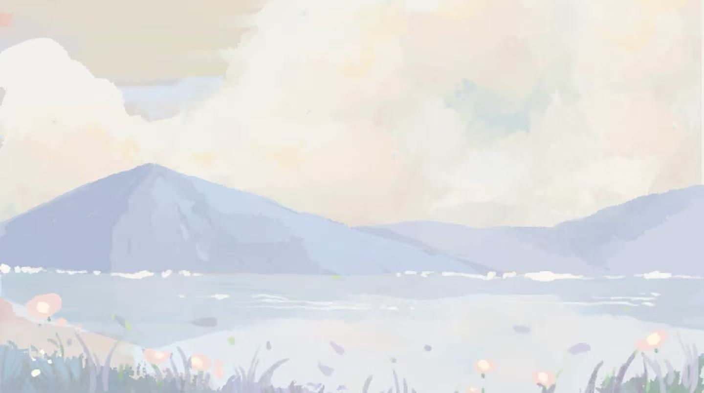
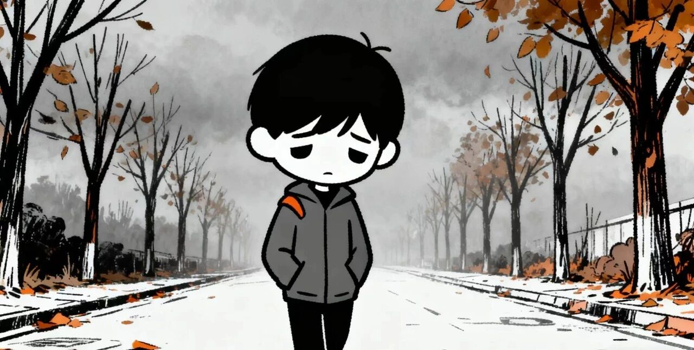
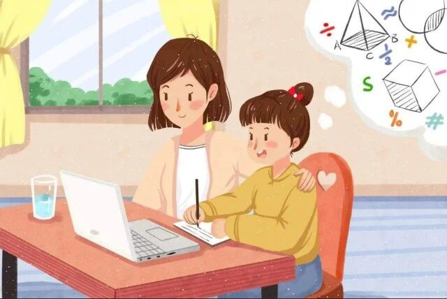
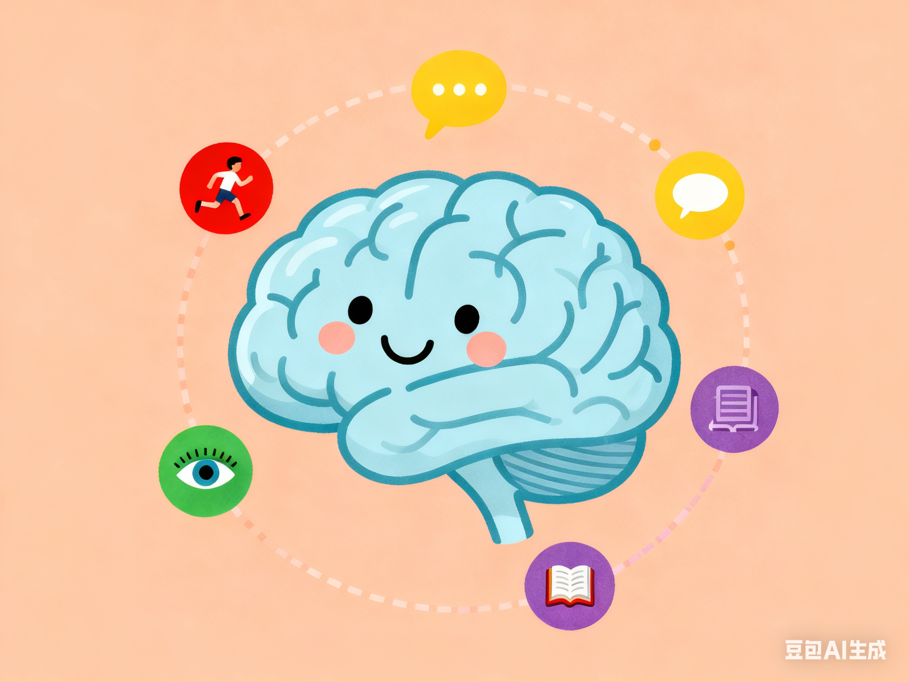
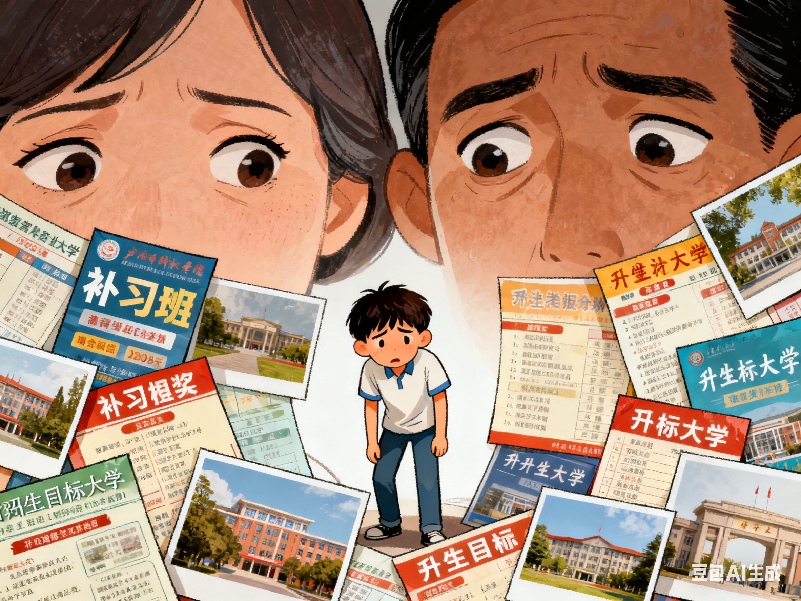
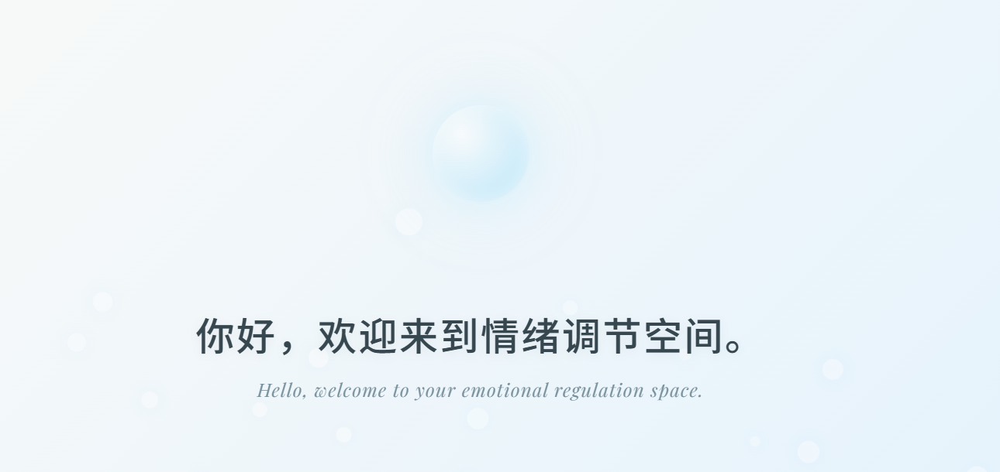
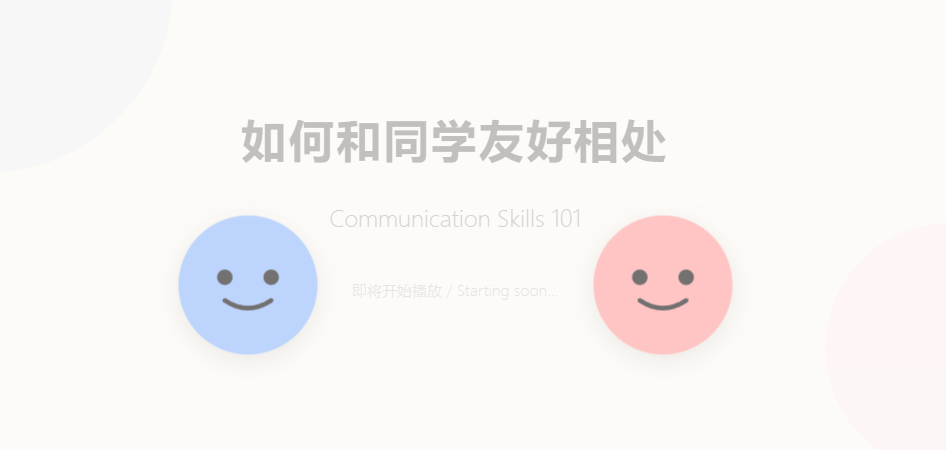
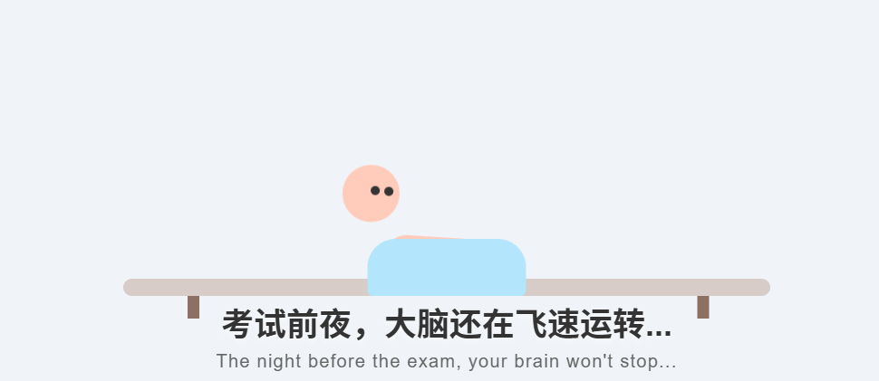
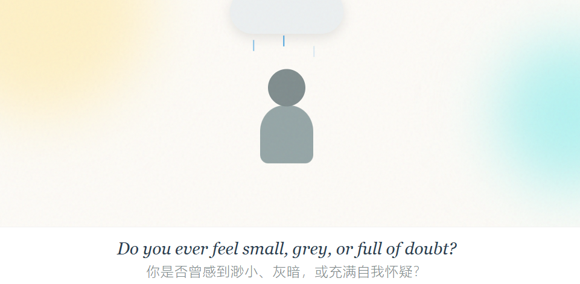

用科学的心理知识，守护你的校园成长，让心理健康触手可及
学习识别、表达和调节情绪的方法，告别焦虑、愤怒、抑郁等负面情绪困扰
掌握科学的减压方法，应对学业、考试、升学等校园压力，保持心理平衡
提升沟通能力，处理同学、师生、亲子关系，建立健康的人际支持网络
建立积极的自我认知，提升自信心，明确成长目标，实现自我价值
改善与父母的沟通方式，化解亲子矛盾，构建和谐的家庭心理环境
应对校园欺凌、适应新环境、处理学业竞争，打造健康的校园心理状态
青少年情绪波动是青春期的正常现象，学会科学管理情绪有助于健康成长，以下是简单方便的自我调节方法，在家在校都能实践...
情绪是人对客观事物的态度体验及相应的行为反应，我们每个人都有快乐、愤怒、恐惧、悲哀情绪...

在心理门诊，经常听到这样的问题：“医生，我最近心情很差，对什么都提不起兴趣，我是不是得抑郁症了...

考试是学生时期最大的压力来源，在重要考试前，学生心理紧张产生了强烈焦虑感...

假如你想打赌稳赢，告诉别人你一定能猜出他们是否感到有压力，然后押“有压力”就对了。

升学，本就是同学们成长路上不可避免的重要节点，从小学到初中，从初中到高中，再到大学，每一次跨越都意味着新的环境、新的课程、新的同学和新的要求...




记录每日情绪变化，识别情绪规律，提升情绪管理能力
5-15分钟不等的正念冥想音频，缓解压力，改善睡眠
青少年心理健康科普手册，图文并茂，易懂实用